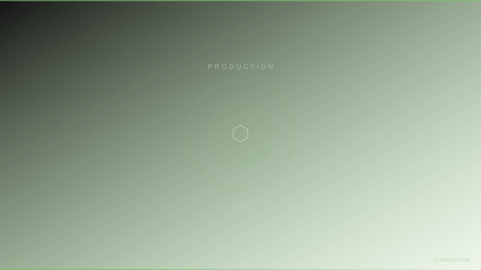

ファッションブランド「ha|za|ma」のプロモーション映像制作に参加。制作進行とライティングディレクターの二役を担当。スチール撮影で培った光のコントロール知識を映像の照明設計に応用。ファッション映像の美的基準を満たすライティングプランを策定。
担当：制作進行 / ライティングディレクション
LEDパネル / Profoto / 大型ストロボ
- Production Manager / LD
- 森川亮太 (M.RYOHTA / @m_ichirinka)
- Client
- ha|za|ma